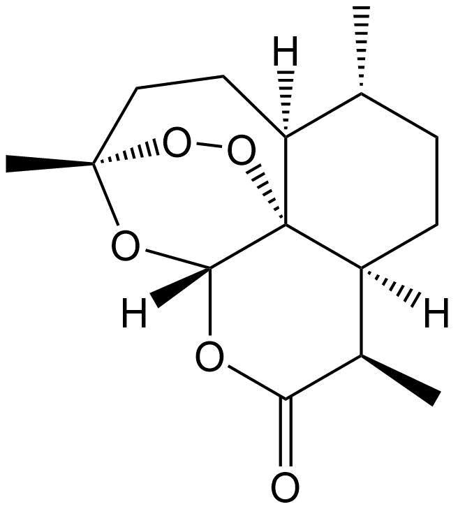
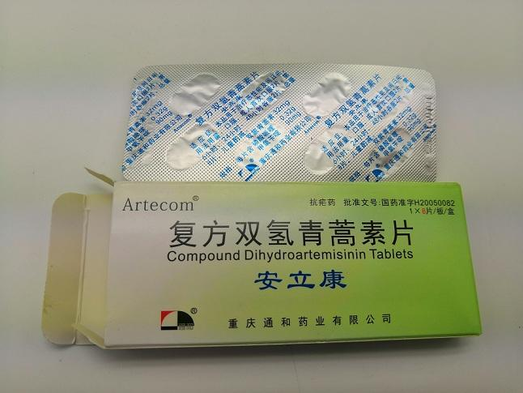

青蒿素是从复合花序植物黄花蒿茎叶中提取的有过氧基团的倍半萜内酯的一种无色针状晶体，由中国药学家屠呦呦在1971年发现。青蒿素是继乙氨嘧啶、氯喹、伯喹之后最有效的抗疟特效药，对耐药性疟原虫有强效。屠呦呦女士因发现青蒿素及合成双氢青蒿素，于2015年被授予诺贝尔生理学或医学奖。图为青蒿素。
青蒿素发现的背景是1955-1975年的越南战争。越南地处热带，丛林中蚊子众多、疟疾肆虐，许多越南和中国将士在当地感染疟疾，失去战斗能力。由于当地的疟原虫对奎宁类抗疟药普遍具有耐药性，中国政府于1967年5月23日在北京启动523抗疟计划，组织全国研制抗疟新药。1969年，北京中药所指定化学研究室的屠呦呦担任抗疟新药研究组长。当时基本思路是采取民间验方，然后进行有效成分分离和验证。一开始青蒿由于抑制率极不稳定而未被采用，直到屠呦呦看到东晋葛洪《肘后备急方》后，将高温萃取改为低温乙醚萃取，才得到稳定高效的青蒿素药物。动物研究显示出100%的疗效，人体研究亦显示出对耐药性疟原虫绝对的疗效。1986年，青蒿素和双氢青蒿素获一类新药证书，1992年获得“全国十大科技成就奖”，1997年获得“新中国十大卫生成就”之一称号。
2005年，医学刊物《柳叶刀》发表文章，指出研究发现使用单方青蒿素的地区疟原虫对青蒿素敏感度下降，这意味着疟原虫有开始出现抗药性的可能。由于双氢青蒿素体内半衰期短，部分疟原虫可通过进入休眠状态或改变生活周期躲避双氢青蒿素杀灭。世卫组织开始全面禁止使用单方青蒿素，改用青蒿素的联合疗法（artemisinin combination therapy，ACT），并推荐多种联合治疗，即每种方案包括青蒿素类化合物，配以另一种化学药物。目前市面上在售的复方双氢青蒿素片含有双氢青蒿素、磷酸哌喹和甲氧苄啶。双氢青蒿素对疟原虫无性体有强的杀灭作用，能迅速杀灭疟原虫，从而迅速控制症状；磷酸哌喹的抗疟作用与氯喹相类似，口服吸收后贮存于肝脏，以后缓慢释放进入血液，作用持久，它能用于疟疾症状的预防和治疗；甲氧苄啶有抑制二氢叶酸还原酶的作用，它与疟原虫二氢叶酸还原酶结合，干扰其嘌呤合成，从而抑制疟原虫的生长。三者复合使用，可增强对疟疾的治疗效果。